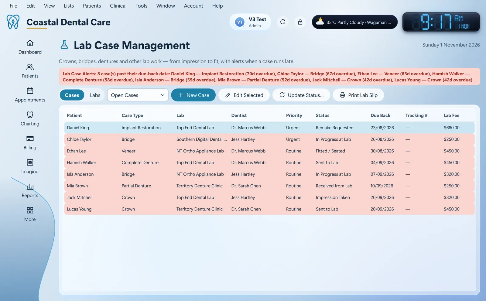
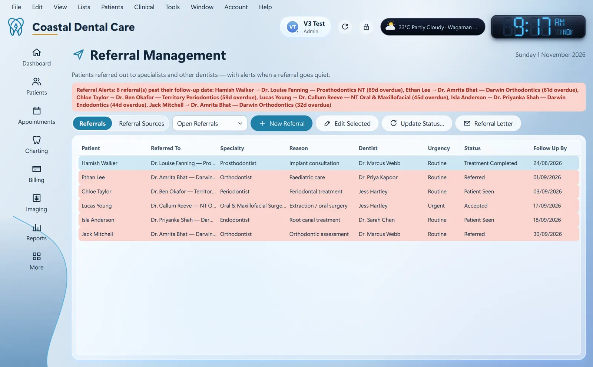
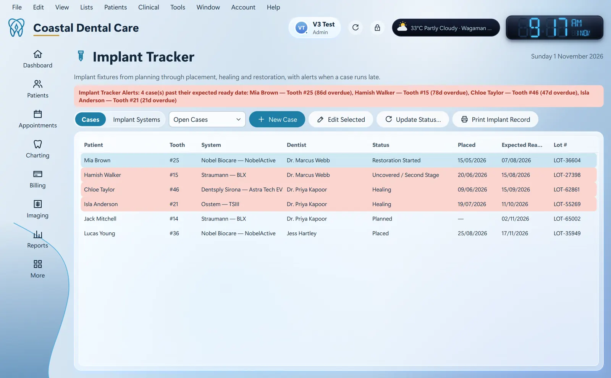

01 / 03 · Labs, referrals & implants
Lab cases
More → Lab Cases
Track every crown, bridge, denture, night guard and implant restoration from impression to fit.
- Link a case to the treatment plan item so the work and the bill stay connected.
- The lab, the type of work and the expected turnaround, with a nudge on the due date.
- Status only changes through Update Status, which keeps a full history and stamps the date sent, received and fitted.
- A red strip flags any case running late.
- Print a lab slip to go in the box.
- A directory of the labs you use, on the same page.

02 / 03 · Labs, referrals & implants
Referrals
More → Referrals
The same tracking for patients you refer to a specialist, from the letter going out to the report coming back.
- Generate the referral letter, then print it, save it as PDF or email it to the specialist.
- A follow-up nudge at 21 days, and the date the report came back recorded once.
- Status history and a red strip for referrals gone quiet.
- One Referral Sources directory serves both “who we send to” and “who sent this patient to us”.

03 / 03 · Labs, referrals & implants
Implant tracker
More → Implants
Every implant fixture gets the traceability a plan line can't hold.
- The system and manufacturer, diameter, length and lot number.
- Placement, healing and restoration dates, with the expected ready date worked out from the system's healing period.
- Status history stamping Placed, Restoration Started and Restoration Completed.
- Print an implant record for the patient's file or the restoring dentist.
- A directory of implant systems on the same page.
